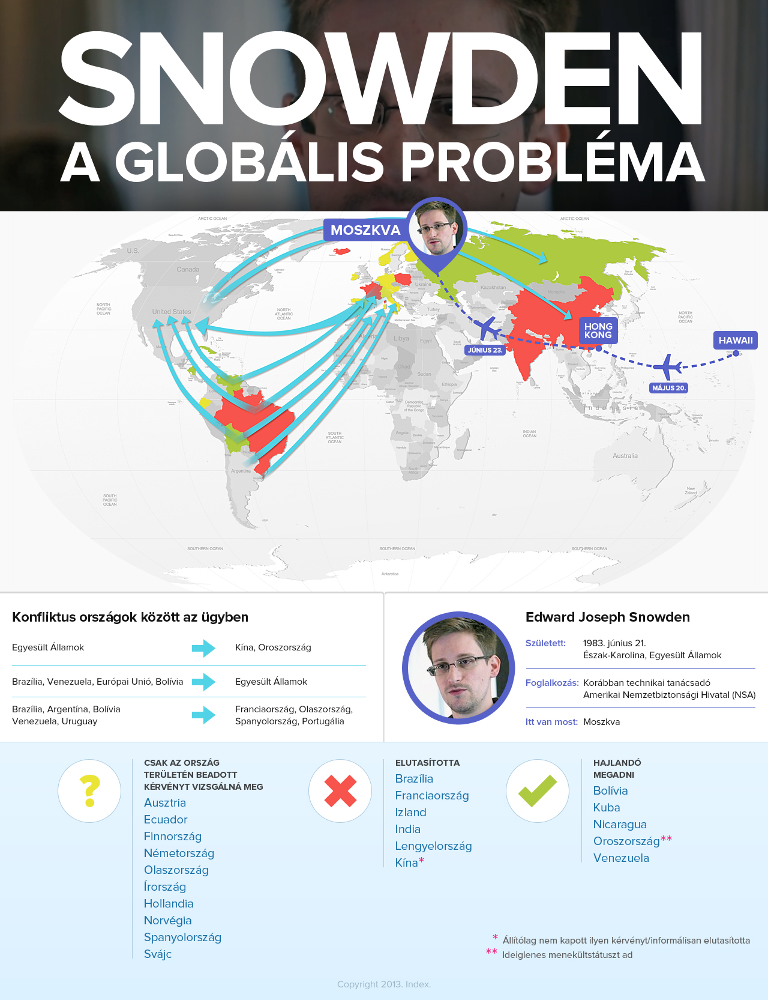
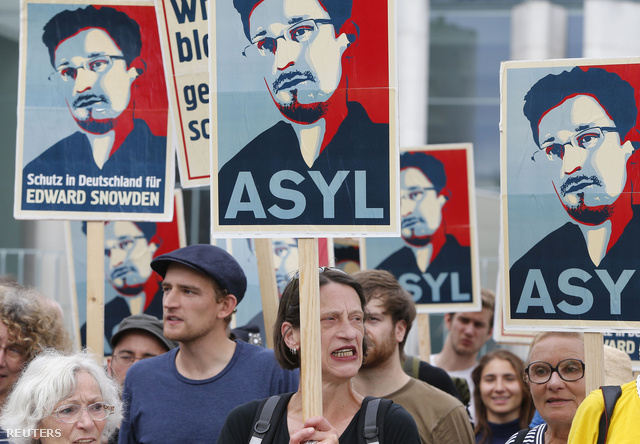
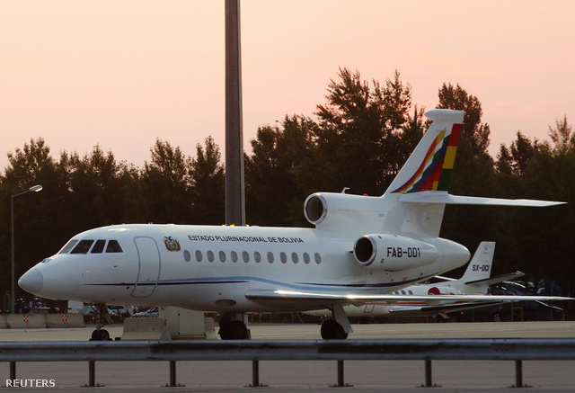
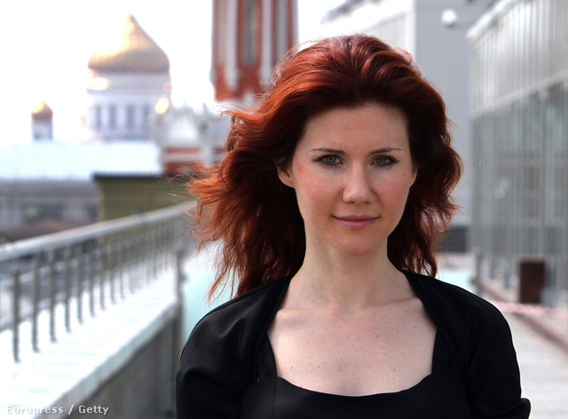
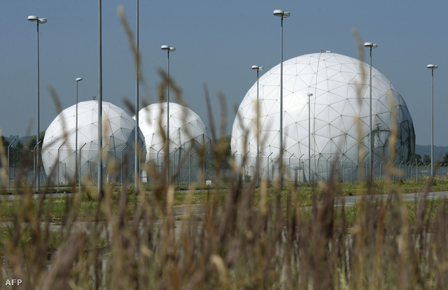
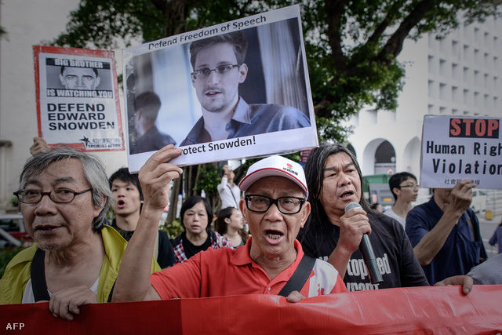

Minden, ami Snowden
Iván András, Nyilas Gergely
2013. július 22., hétfő 19:49 | négy hónapja frissítve |
A kiszivárogtató szappanoperai fordulatokkal még a moszkvai reptér tranzitjában vesztegel, ügyvédje szerint már csak szerdáig, az NSA megfigyelési botránya gyűrűzik tovább, miközben izzik a feszültség nagyhatalmak és kontinensek között is. Csomópontokba szedve minden, amit tudni akart a Snowden-ügyről és az NSA megfigyelési botrányának állásáról.
Most akkor ez tényleg minden eddiginél nagyobbat szólhat?
Az 1971-ben a Pentagon-iratokat kiszivárogtató Daniel Ellsberg az ügyet az eddigi legfontosabb kiszivárogtatásnak nevezte az Egyesült Államok történetében. A szivárogtatásokból oroszlánrészt vállaló Guardian brit lap az egész ügy kezdetén még számos leleplező cikket és új információkat ígért. De egyáltalán mi szivárgott ki eddig, mit tett le az asztalra az állítólag vaskos aduászokat rejtegető Snowden?

Nagyobb képért, magyarázatért kattintson!
- Az amerikai Nemzetbiztonsági Ügynökség (NSA) több tízmillió amerikai telefonbeszélgetéseit hallgatta le egy titkos bírósági döntésre hivatkozva. A Snowden által kiszivárogtatott dokumentumok szerint az NSA a PRISM fedőnevű rendszer segítségével a Microsoft, a Google, a Yahoo, a Facebook, a YouTube, a Skype, az AOL, az Apple és a PalTalk internetes óriásvállalatok és szolgáltatások adatforgalmát is megfigyelte. Az érintett cégek többsége, például a Google ugyanakkor élesen cáfolta, hogy ilyen megfigyelés folyna a szolgáltatásain.
- A hasonló feladatokat ellátó, brit GCHQ-t is azzal vádolták meg, hogy információkat gyűjtött a PRISM-en keresztül. A brit kormány kommunikációs figyelőszolgálata a nemzetközi telefonos és internetes adattovábbító kábelhálózatok forgalmát is rögzítette. A GCHQ emellett a G20-országok két londoni értekezletén is lehallgatta a résztvevők elektronikus és telefonos adatforgalmát.
- Az NSA Hongkongot és Kínát is megfigyelte. A célpontok között voltak kínai távközlési vállalatok számítógépes rendszerei, valamint az sms-ek is. Snowden információi szerint a Kína oktatási és kutatói központjának tartott Csinghua (Tsinghua) Egyetem ellen kiterjedt kibertámadást hajtott végre januárban az NSA, 2009-ben pedig megtámadták Hongkong Pacnet nevű internetszolgáltatóját is.
- Az NSA az Európai Unió különböző intézményei ellen is kémkedett az Egyesült Államokban és Európában. Bepoloskázták és bedrótozták állítólag az EU washingtoni irodáit, valamint a New York-i ENSZ-képviseletet is. A dokumentumok emellett azt mutatják, hogy öt évvel ezelőtt az EU brüsszeli központjában is lehallgatást végeztek.
- Összesen harmincnyolc nagykövetséget és diplomáciai missziót figyeltek meg a legkülönfélébb módszerekkel az amerikai titkosszolgálatok. A célpontok között volt Franciaország, Olaszország, Görögország, de Amerika olyan regionális szövetségesei is, mint Japán, Dél-Korea és India.
- Az óceánok fenekére lefektetett optikai kábelek adatforgalmát is megfigyeli az NSA. Ez a rendszer a PRISM-mel párhuzamosan fut, és Upstream a neve. Április elején állítólag 117 ezer aktív megfigyelési célpont volt a rendszerekben.
- A Microsoft szorosan együttműködött az amerikai titkosszolgálatokkal, hogy elősegítse a felhasználók kommunikációjának megfigyelését, ráadásul az NSA-nek hozzáférése van a titkosított beszélgetésekhez is. A Microsoft közleményben tagadta, hogy teljes és korlátlan hozzáférést biztosítana a szolgáltatásokhoz az NSA-nek, ugyanakkor megjegyezte, hogy teljes mértékben betartja törvényi kötelezettségeit.
- És ki hitte volna: Snowden azzal a hihetetlen revelációval is előállt, miszerint a nyugati államok régóta együttműködnek az NSA-jel, de álszent módon mégis nyilvánosan felháborodtak a botrány kirobbanása után. A német kémek például állítólag az NSA eszközeivel elemzik a Közel-Keletről szerzett információkat.

Fotó: Tobias Schwarz
Eddig itt tart maga a botrány, de a Guardian szerint Snowdennek még bőven vannak aduk a tarsolyában, többek között az NSA működéséről. A brit lap szerint ráadásul Snowden jó kiszivárogtatóhoz méltón alaposan bevédte magát: ha bármi történne vele, akkor a világ legkülönfélébb pontjain elrejtett, nem is sejtett titkok kerülnének nyilvánosságra. „Egy perc alatt több kárt okozhatna az amerikai kormánynak, mint eddig bárki” -mondta a Guardian egyik újságírója.
Hős, őrült, vagy ki a fene ez a Snowden?
A botrányon túlnőve azonban sokkal többet foglalkoznak a sajtóban magával a kiszivárogtatóval, a szinte már sztárstátuszba emelkedő Edward Snowdennel, az NSA volt alkalmazottjával, akinek személyét azonban számos ellentmondás övezi. „Nem vagyok sem áruló, sem hős. Amerikai vagyok” mondta még kilétének felfedésekor Snowden, aki igazságérzetével indokolta a botrány kirobbantását. Mint mondta, áloméletét, barátnőjét adta fel Hawaiin, hogy lelkiismerete hajszolására leleplezze az NSA megfigyelési gyakorlatát, és legalább vitát indítson az ügyben. „Ő nem emberi jogi aktivista, nem ellenzéki. Titkos információ kiszivárogtatásával vádolják" replikázott viszont Jay Carney, a Fehér Ház szóvivője, ahogy számos amerikai politikus is bíróság előtt akarja látni a férfit. Snowden tart ugyan kínzástól, de szerinte nem tudnák megtörni.

Fotó: The Guardian / AFP
Önmagában különösen szokatlan, hogy egy hasonló botrányban ennyire korán felfedje magát a forrás. Snowden így ugyanis egyrészről személyével hitelesebbnek mutatja a kiszivárgott információkat, másrészről viszont óhatatlanul is ő került reflektorfénybe. Már akkor is naponta találgatták, hogy vajon Hongkongban van-e még, amíg ott rejtőzött, de az ügye már szappanoperai fordulatokat vett, mióta átrepült Moszkvába, ahol a Seremetyjevói reptér tranzitjában vesztegel.
Előbb több száz újságíró repült potyára, Snowden nélkül egy Kubába tartó géppel, majd Evo Morales bolíviai elnök Moszkvából hazatérő repülőjét szállították le és vizsgálták át Bécsben. Közben a fehérneműreklámban is főszerepet kapó Snowdennek házassági ajánlatott tett a három éve Amerikában lebukott szexi orosz kémnő, Anna Chapman. Az egész megkoronázásaként a héten Nobel-békedíjra is felterjesztették a kiszivárogtatót, és természetesen már a filmkészítők is jelentkeztek, hogy látnának fantáziát a történetében.

Pedig Snowdenről még mindig nem tudunk túl sokat, egyesek szerint még az is kiderülhet, hogy a története nem is teljesen felel meg a valóságnak. Az sem teljesen tiszta például, milyen kapcsolat van Snowden és a Wikileaks között, melynek alapítója, Julian Assange már több mint egy éve Ecuador londoni nagykövetségén bujkál. A Wikileaks egyik jogásza, Sarah Harrison segített Snowdennek eljutni Moszkvába, és a levelét is nyilvánosságra hozták a honlapjukon, habár elvileg a kiszivárogtató nem kötődik hozzájuk, és nem is rajtuk keresztül adott át iratokat nagy lapoknak.
Egymásnak ugrottak már a nagyhatalmak?
Az ügy alaposan kiélezte a feszültséget az Egyesült Államok és más országok, de több nyugati ország és Latin-Amerika között is. A Kínát az elmaradt kiadatás miatt ostorozó Egyesült Államok azzal vádolta Oroszországot, hogy propagandaplatformot nyújt Snowdennek. Putyin ugyan hivatalos nyilatkozatai alapján már szívesen megszabadulna Snowdentől, de azért senkinek ne legyenek illúziói, elég csak rápillantani az Economist nagyszerű képregényére. Snowdenről beszélt telefonon péntek éjszaka Barack Obama és Vlagyimir Putyin is, de nem tudni, mire jutott a két elnök.
Elemzők szerint az Egyesült Államoknak a hagyományos ellenségeinek számító Venezuela és Ecuador felháborodása mellett sokkal nagyobb problémát jelenthet, hogy latin-amerikai partnereinél – például Brazíliában, Kolumbiában, Mexikóban és Chilében – is felháborodást váltott ki az ügy. A brazil parlamentben képviselők azt sürgették, hogy adjanak menedéket Snowdennek, míg mások úgy vélték, hogy fel kellene mondaniuk a jövedelmező védelmi szerződéseket az USA-val.

Evo Morales magángépe a bécsi reptér kifutóján
Fotó: Heinz-Peter Bader / Reuters
Abból is nemzetközi diplomáciai botrány lett, hogy átkutatták az osztrák hatóságok Evo Morales bolíviai elnök Bécsben leszállított gépét. Franciaország, Olaszország, Spanyolország és Portugália előzőleg pedig megtagadta az átrepülést a légterükön. A bolíviai elnöknek 13 órát kellett várakoznia Bécsben, mielőtt továbbindulhatott volna Moszkvából megkezdett útján La Pazba. „Morales elnök ügye nemcsak Bolíviának, hanem egész Latin-Amerikának csapás” – mondta a brazil elnök. Brazília, Argentína, Venezuela és Uruguay is jelezte, hogy az eset miatt visszahívják nagykövetüket Franciaországból, Spanyolországból, Portugáliából és Olaszországból.
Kit érdekel ez az egész?
Amíg Snowden Hongkongban volt, New Yorkban negyvenfős szimpátiatüntetést tartottak újságírók, majd öt nappal később több száz fős megmozdulás volt mellette Hongkongban. Két héttel később, Snowden moszkvai megérkezése után már csak két-három fős Snowdent támogató tüntetés zajlott le az orosz főváros repülőterénél.

Fotó: Philippe Lopez
Az Egyesült Államokban létrejött a Restore the Fourth kampány a név utalás az alkotmány negyedik kiegészítésének védelmére amelyet az Internetvédelmi Liga szervezett országszerte. A kezdeményezéshez több cég csatlakozott, köztük a Reddit, és a Mozilla. A július 4-i országos tiltakozó kampány arca John Cusack hollywoodi színész volt.
Ellenmondásos azonban az amerikaiak hozzáállása a Snowden által feltárt tényekhez, amelyeket sokan nyílt titokként kezelnek. A CNN által közölt június 11-13. között készített, ezerfős felmérés szerint a többség (52 százalék) nem ért egyet a szivárogtatás mellett döntő Snowdennel, viszont még ennél is többen (54 százalék) ellenzik a vele szemben fellépő Obama akcióit. Egy hónappal később azonban már változott a kép: a Quinnipiac Egyetem felmérése szerint júlis 10-én már 55 százalék ítélte meg pozitívan Snowden lépését, és csak 34 százalék tekintette őt egyértelműen árulónak.
Jelentősen módosult az amerikaiak tűréshatára is: 2010-ben még 63 százalék érezte úgy, hogy a kormány indokolt lépéseket tesz a terrorizmus megfékezésére,ezt csak 25 százalék sokallotta, ám a múlt heti felmérés szerint már csak 40 százalék érzi úgy, hogy biztonsága érdekében indokolt mértékben kap betekintést a kormány az életébe, szemben azzal a 45 százalékkal, akik szerint a kormány túl messzire ment az antiterrorizmus nevében vívott harcban a szabadságjogok rovására.